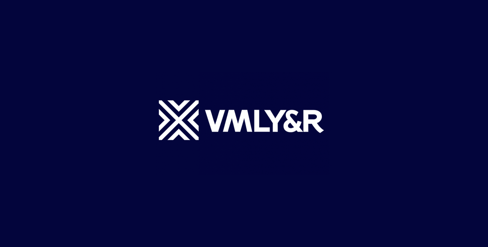
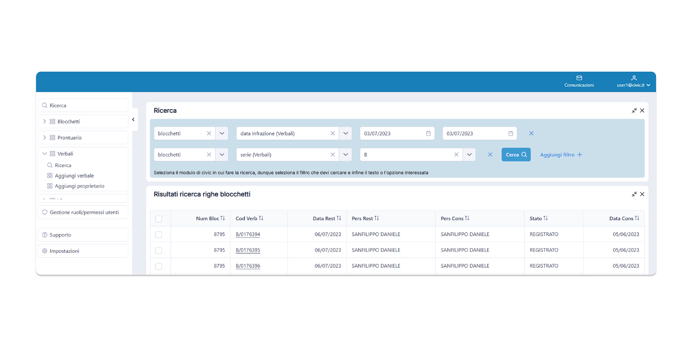

Hello, I'mCiao, sono Giorgio.
A curious, committed problem solver who designs clarity into complex, data-intensive B2B products.
Off the clock, you'll find me on a mountain bike, climbing, or trail running.
Un problem solver curioso e determinato, che porta chiarezza in prodotti B2B complessi e data-intensive.
Fuori dall'ufficio mi trovi in mountain bike, in arrampicata o nel trail running.
Selected work.Lavori selezionati.
A few selected projects — each opens into a full case study. See the rest on the all-work page, or download my CV or portfolio. Alcuni progetti selezionati — ognuno apre un caso studio completo. Gli altri sono nella pagina con tutti i lavori, oppure scarica il mio CV o il portfolio.

VMLY&RVMLYR
Product & service design across the agency's digital division — e-commerce and digital products for Whirlpool, Lavazza and Bolton. Product & service design nella divisione digital dell'agenzia — e-commerce e prodotti digitali per Whirlpool, Lavazza e Bolton.
View case studyVedi il caso studio → Siemens Building X
Siemens Building XBuilding X
First end-to-end mapping of the building onboarding journey — 40+ users across 3 continents. Prima mappatura end-to-end del journey di onboarding degli edifici — oltre 40 utenti su 3 continenti.
View case studyVedi il caso studio →
CivicCivic
End-to-end redesign of a 25-year-old platform for the full lifecycle of fines — 700+ fields across 45 screens. Redesign end-to-end di una piattaforma ventennale per l'intero ciclo di vita delle sanzioni — oltre 700 campi su 45 schermate.
View case studyVedi il caso studio → Energy Manager
Energy ManagerEnergy Manager
Monitoring and optimizing energy across complex building portfolios, from discovery to developer handoff. Monitoraggio e ottimizzazione energetica su portfolio edilizi complessi, dalla discovery all'handoff agli sviluppatori.
View case studyVedi il caso studio → Connexia
ConnexiaConnexia
Product design and innovation consulting — emerging AR/VR tech and service blueprints for Fastweb, SisalPay and ActionAid. Product design e consulenza d'innovazione — tecnologie emergenti AR/VR e blueprint di servizio per Fastweb, SisalPay e ActionAid.
View case studyVedi il caso studio →Experis
Product design and ownership on internal products — Frankie, a manager-performance tracker, and CV Scanner, a recruitment-orchestration tool. Product design e ownership su prodotti interni — Frankie, tracker delle performance dei manager, e CV Scanner, strumento di orchestrazione del recruiting.
View case studyVedi il caso studio →Nine years across startups, corporations and consulting — learning to design for complexity and fast-changing contexts. Nove anni tra startup, aziende e consulenza — imparando a progettare per la complessità e contesti in rapido cambiamento.
I started as an industrial product designer, which gave me a strong foundation for understanding how digital products interface with physical technologies and deliver real-world impact. Ho iniziato come industrial product designer, il che mi ha dato solide basi per capire come i prodotti digitali si interfacciano con le tecnologie fisiche e generano impatto concreto.
In recent years I've focused on data-intensive B2B platforms at Siemens — decoding complexity, balancing technical feasibility with strict requirements, and keeping product and engineering tightly aligned. Negli ultimi anni mi sono concentrato su piattaforme B2B data-intensive in Siemens — decodificando la complessità, bilanciando fattibilità tecnica e requisiti stringenti, e tenendo prodotto e sviluppo strettamente allineati.
- Lead end-to-end design across the full product lifecycle.Guidare il design end-to-end lungo l'intero ciclo di vita del prodotto.
- Turn complexity into clear, AI-ready information architecture.Trasformare la complessità in un'architettura informativa chiara e pronta per l'AI.
- Grow design culture — mentoring teams and documenting frameworks.Sviluppare la cultura del design — mentoring dei team e documentazione dei framework.
- Act as product owner — bridging design and development, driving delivery end-to-end.Agire da product owner — collegare design e sviluppo, guidando la delivery dall'inizio alla fine.
This site was designed and built by Giorgio Messina with the support of artificial intelligence. Every element comes from a small living design system — feel free to look under the hood. Questo sito è realizzato da Giorgio Messina con il supporto dell'intelligenza artificiale. Ogni elemento nasce da un piccolo design system vivo — puoi verificare com'è costruito.
Explore the design systemEsplora il design system →